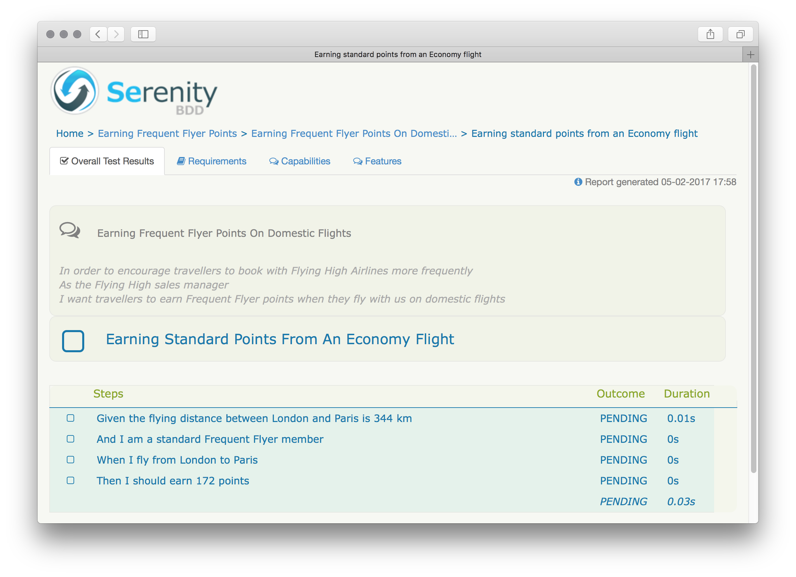

Working with Cucumber
Cucumber is a popular collaboration tool used by many teams practicing Behaviour-Driven Development to capture requirements in a form of concrete examples and executable specifications.
This guide focuses on just a small subset of features provided by Cucumber, and is limited to writing step definition libraries and executing test scenarios.
To learn more about Cucumber and Behaviour-Driven Development, please consider reading the below books, or joining the Serenity/Dojo.
"BDD in Action" by John Ferguson Smart, author of Serenity BDD, covers many of the reporting capabilities of the Serenity BDD library, which is the reporting engine also used by Serenity/JS:


Prerequisites
Please make sure that you have the required tools installed
and dependencies added to your project.
That Protractor is configured to use the 'cucumber' dialect
and you have a tsconfig.json file in place.
Directory Structure
The typical directory structure of a Serenity/JS and Cucumber project looks like this:
├── features <- Feature specifications
│ ├── capability_1 <- Features delivering "Capability 1"
│ │ └── feature_A.feature <- Scenarios related to some "Feature A"
│ ├── capability_2
│ │ ├── feature_B.feature
│ │ └── feature_C.feature
│ ├── step_definitions <- Step Definition Libraries
│ │ └── ...
│ └── support <- Cucumber context
│ └── ...
├── src <- Application sources
│ └── ...
├── spec <- Test sources
│ ├── screenplay <- Screenplay-related code: Tasks, Actors, etc.
│ │ └── ...
│ └── ... <- Unit tests, integration tests, etc.
├── target <- Test execution artifacts
│ └── site
│ └── serenity <- Serenity BDD JSON and HTML reports
├── package.json <- Node.js project file
├── protractor.conf.js <- Protractor configuration
└── tsconfig.json <- TypeScript configuration
To better understand the purpose of each directory in the above listing, and how it relates to the reporting capabilities of Serenity/JS, let's consider the following example involving a fictional company - the Flying High Airlines (more on this example in "BDD in Action").
 PRO TIP: In the above example listing, both the application code (
PRO TIP: In the above example listing, both the application code (src) and the test code (spec) live in
the same repository.
Having both the production and the test code base in the same place is beneficial as it encourages both developers
and testers to keep the test scenarios up to date with the application features.
Example
Flying High Airlines would like to encourage traveller loyalty through some sort of a reward system. A Frequent Flyer Programme could enable the travellers to earn points whenever they book with the airline. The points earned this way could be then spent on flight upgrades.
Let's look at how some of the example scenarios illustrating the features delivering this capability could be formulated.
Capabilities don’t imply any particular implementation. For example, “the ability to book a flight” could be provided online, over the phone, or at counter at the airport.
In our example, the capability we want to enable is to let the travellers earn the Frequent Flyer points.
The name of the capability becomes the name of the directory under features:
├── features
│ ├── earning_frequent_flyer_points
│ │ └── ...
│ ├── spending_frequent_flyer_points
│ │ └── ...
│ └── ...
└── ...
PRO TIP: You might have noticed that the above directory structure differs from
a box-standard Cucumber implementation
as it allows you to group features by the capabilities they deliver.
This has several advantages:
- improved discoverability and understandability
- improved reporting - understanding what features deliver what capabilities enables you to better assess the health and release readiness of your system.
Features are pieces of deliverable software functionality, such as an “Online Frequent Flyer account summary.” Features deliver the capabilities.
One of the features delivering the above capability could be for travellers to earn Frequent Flyer Points when they book domestic flights.
The description of a feature is stored in a .feature file, such as this one:
Feature: Earning Frequent Flyer points on domestic flights
In order to encourage travellers to book with Flying High Airlines more frequently
As the Flying High sales manager
I want travellers to earn Frequent Flyer points when they fly with us on domestic flights
The .feature file is then stored under the directory describing the capability the feature delivers:
├── features
│ └── earning_frequent_flyer_points
│ ├── earning_points_on_domestic_flights.feature
│ └── ...
└── ...
Example Scenarios illustrate how a feature works, such as “Account summary should display a list of recently earned points.”
Example scenarios are expressed using
the Given/When/Then syntax,
and stored together with the description of the feature in the .feature file:
Feature: Earning Frequent Flyer points on domestic flights
In order to encourage travellers to book with Flying High Airlines more frequently
As the Flying High sales manager
I want travellers to earn Frequent Flyer points when they fly with us on domestic flights
Scenario: Earning standard points from an Economy flight # example scenario 1
Given the flying distance between London and Paris is 344 km # scenario steps
And I am a standard Frequent Flyer member
When I fly from London to Paris
Then I should earn 172 points
Scenario: Earning extra points in Business class # example scenario 2
Given the flying distance between London and Paris is 344 km
And I am a standard Frequent Flyer member
When I fly from London to Paris in Business class
Then I should earn 344 points
# ... other scenarios illustrating the feature
If you were to run the above scenarios now, you'd notice that instead of executing the automated tests, Cucumber tells you that the step definitions have not been implemented yet. It'll however helpfully propose a starting point for the implementation:
1) Scenario: Earning standard points from an Economy flight - features/earning_frequent_flyer_points/earning_points_on_domestic_flights.feature:7
Step: Given the flying distance between London and Paris is 344 km - features/earning_frequent_flyer_points/earning_points_on_domestic_flights.feature:8
Message:
Undefined. Implement with the following snippet:
this.Given(/^the flying distance between London and Paris is (\d+) km$/, function (arg1) {
// Write code here that turns the phrase above into concrete actions
return 'pending';
});
The Serenity BDD report will also mark those missing steps as "pending implementation":

Another thing that you'll find is that since we only have two scenarios illustrating the feature that delivers the capability, both the capability and the feature are marked as "pending implementation":
Let's see how to automate a Cucumber scenario now.
Your feedback matters!
Suggest features and improvements on github, get in touch on twitter, and if you found Serenity/JS useful - don't forget to give it a star! ★